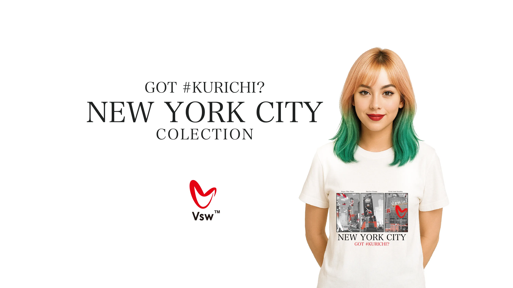
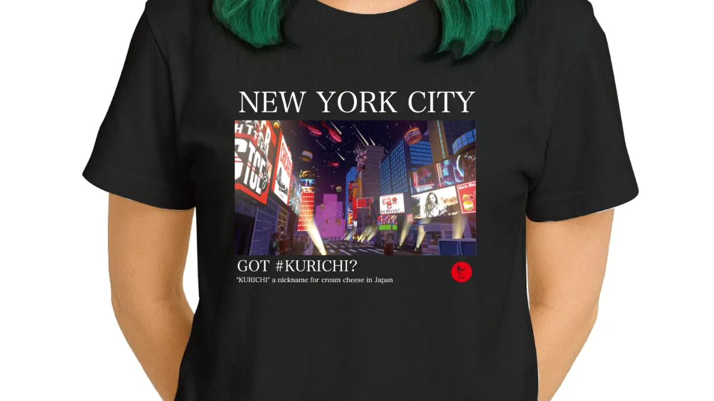
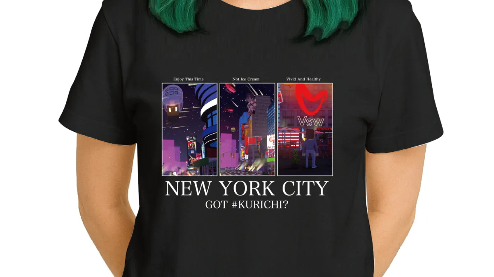
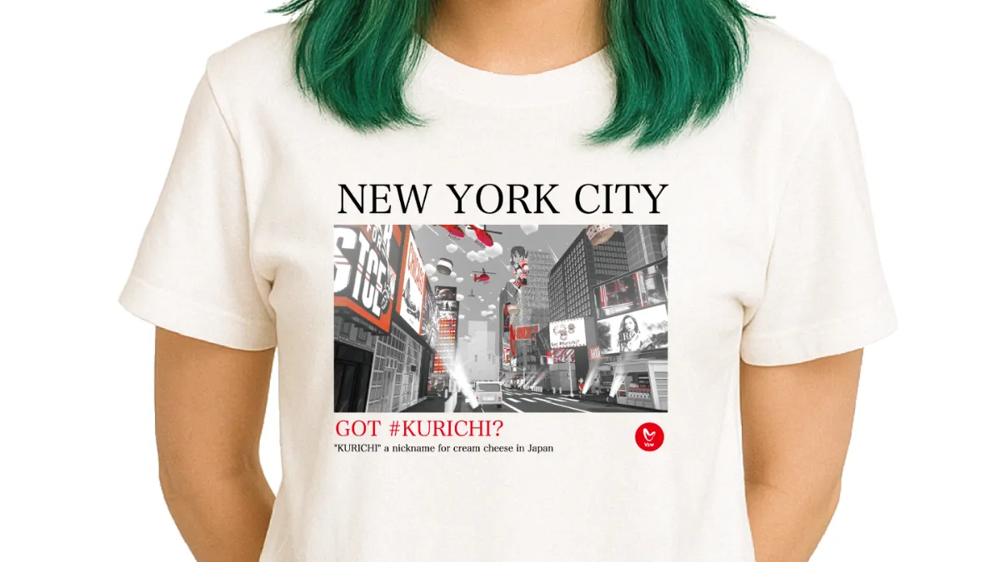
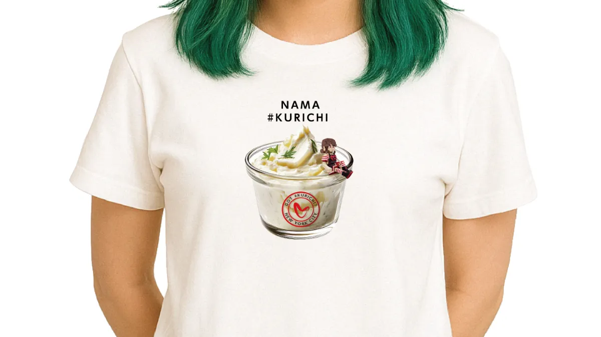

クリチLANDで働く人気キャラクター、ハリチ君（HARICHI）がついに "公式アパレル" としてTシャツになりました！
今回のTシャツは、今どきのゆったり感が楽しめる オーバーサイズシルエット（5.6オンス／ユナイテッドアスレ）を採用。ユニセックスで誰でも着こなしやすく、リラックス感のあるシルエットが魅力です。
LINEUP




🎨 カラー展開：白 & 黒の2種類
どちらも普段使いしやすく、キャッチーなハリチ君がしっかり映える万能カラーです。
👕 デザインラインナップ 全4種類
今回のコレクションでは、ハリチ君の魅力を存分に楽しめる選りすぐりの4デザインをご用意しました。
① #HARICHI with #KURICHI
ハリチ君＋クリチの最強コンビ。一番人気の"象徴的デザイン"です。
② #HARICHI（Red）
赤いロゴとクラシックなハリチ君が印象的。コーデの主役になるポップで元気な仕上がり。
③ #HARICHI（Blue）
爽やかなブルーロゴをまとったハリチ君。少しクールに、ストリート寄りの着こなしも楽しめます。
④ WE ARE #HARICHI
3〜4体のハリチ君が並ぶ、チーム感満載のスペシャルデザイン。イベントや仲間とのお揃いにもおすすめ！

📦 使用ボディについて
- ブランド：ユナイテッドアスレ 5.6オンス ビッグシルエット
- ほどよい厚みの5.6オンス
- 肩落ちのワイドシルエット
- 耐久性も高く毎日着られる
- 男女問わず使いやすい"今っぽい"形
普段着にもイベントユニフォームにもぴったりの高品質ボディです。
ハリチ君の世界観をそのまま着られる、クリチLAND公式Tシャツの新ラインナップ。
キャラクターの魅力 × トレンドシルエット × 高品質ボディ — この3つを掛け合わせた、こだわりのコレクションになりました。
あなたのお気に入りのハリチ君を選んで、日常に"クリチのワクワク"を取り入れてください！